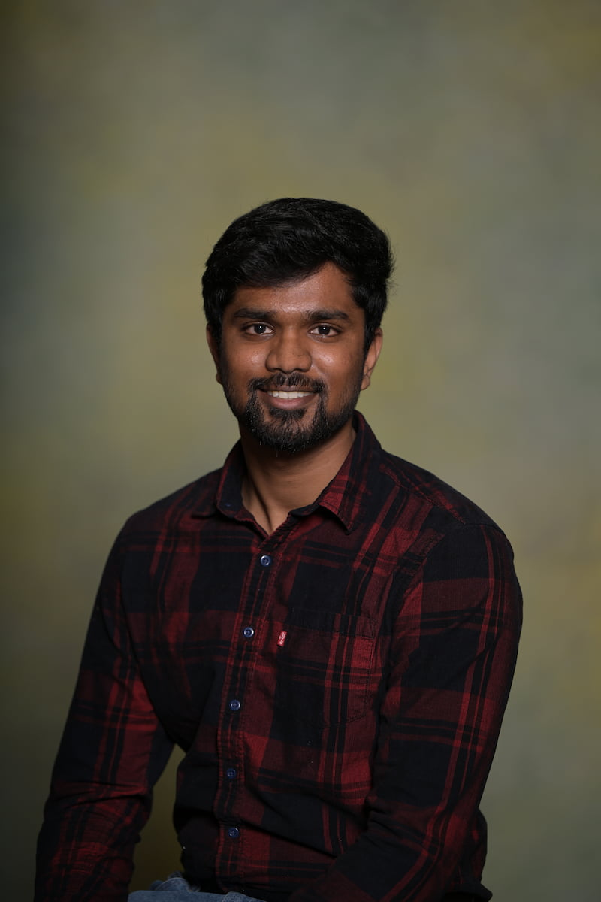

Security Analyst & Engineer
Cybersecurity professional with 3+ years of enterprise experience in access governance, incident response, and security operations. Currently pursuing an M.S. in Cybersecurity at Northeastern University, with hands-on work spanning AI threat research, SAP security engineering, and critical infrastructure analysis.

Background
I'm a cybersecurity professional who started in enterprise security engineering and worked my way into research, teaching, and analysis. Before starting my Master's at Northeastern, I spent three years at LTIMindtree in Bangalore — auditing access across 6,000+ roles, running incident response for SAP environments, and securing a cloud migration for 2,500+ entities.
At Cognex in Natick, I shifted into AI security research — mapping threat surfaces in AI-enabled systems, studying prompt injection and data leakage patterns, and building Python tooling to automate audit trail generation. I also served as a Graduate Teaching Assistant at Northeastern's Khoury College, supporting courses in cybersecurity and critical infrastructure security.
Outside of work, I recharge in nature — national parks, open trails, and anywhere with a good view. That same patience and attention to detail follows me into security work: I take my time, read the terrain, and don't miss things.
I'm actively looking for roles in security analysis, IAM, GRC, or incident response where I can contribute from day one.
Technical Profile
Security Domains
Tools & Platforms
Languages & Scripting
Infrastructure & Cloud
Frameworks & Standards
Career
Graduate Teaching Assistant — CY5250 & CY5200
Khoury College · Northeastern University · Boston, MA
Security Research & Platform Governance Intern
Cognex · Natick, MA
Security Engineer — Enterprise Systems & Access Security
LTIMindtree · Bangalore, India
Software Intern
Unique Tech Designs Pvt. Ltd · Hubli, India
Work
AMTRAK Cyber Threat Analysis & Policy
ResearchAssessed U.S. rail infrastructure cybersecurity — conducting risk assessments across network architecture, evaluating resilience, threat exposure, and policy alignment with NIST CSF.
Network Security Labs
LabHands-on labs covering ARP Spoofing, TOCTOU race conditions, network traffic analysis, IDS/IPS configuration with Snort & Suricata, and Netflow analysis.
AI Security Risk Research — Cognex
CompletedMapped threat surfaces in AI-enabled systems — studying prompt injection, data leakage, and model abuse — and built Python tooling to automate audit trail accuracy and forensic traceability.
SAP HANA Cloud Security Migration
CompletedDrove role redesign and security validation for 2,500+ entities during SAP HANA Cloud migration — eliminating legacy vulnerabilities and documenting control effectiveness for SOX audit purposes.
Industrial Embedded System Security
CompletedDesigned embedded system prototypes for industrial hazard detection, simulating spoofing, fault injection, and tampering attacks to analyze trust boundaries and document attack surface mitigations.
Credentials
M.S. Cybersecurity
Northeastern University, Boston MA
2024 — 2026
B.E. Electronics & Instrumentation Eng.
Dayananda Sagar College of Engineering · GPA 3.65/4.0
2017 — 2021
ISC2 Certified in Cybersecurity (CC)
ISC2
2025
Google Cybersecurity Certificate
Google / Coursera
May 2025
PLC & SCADA Training Certification
Programmable Logic Controllers & Supervisory Control
2021
Say Hello
I'm actively looking for full-time roles in cybersecurity. Whether you have an opportunity, a question, or just want to talk security — my inbox is open.